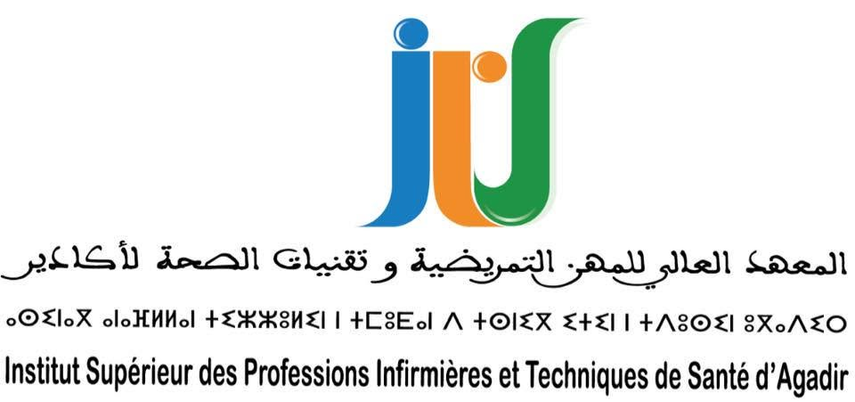
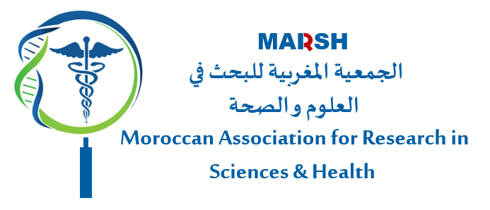
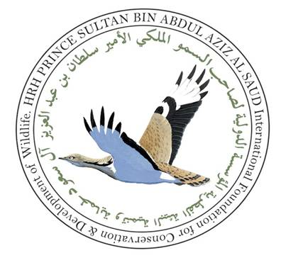

Pr. Amal KORRIDA
Épidémiologie & Génétique Humaine | ISPITS Agadir
Épidémiologie & Génétique Humaine | ISPITS Agadir

Accédez ci-dessous en temps réel aux informations officielles, cursus, décrets réglementaires et actualités des Instituts Supérieurs des Professions Infirmières et Techniques de Santé :
💡 Un problème d'affichage ? Vous pouvez également tenter d'ouvrir manuellement l'accès via le Portail National du Ministère de la Santé.

Fondée et présidée à l'échelle nationale par le Pr. Amal Korrida, la MARSH est une Association scientifique savante, à but non lucratif, non gouvernementale, et politiquement et confessionnellement neutre.
Objectif et Missions Fondatrices :
La promotion, le développement et l’innovation dans le domaine de la recherche scientifique et de la santé au Maroc, par tous les moyens adéquats et dans tous les aspects (académique, technique, professionnel…etc.).

Parcours d'excellence historique de 1999 à 2012 en tant que Biologiste-Généticienne et Responsable du Laboratoire de Génétique Moléculaire au sein de la prestigieuse HRH Prince Sultan Bin Abdul Aziz AL SAUD International Foundation for Conservation and Development of Wildlife (IFCDW).